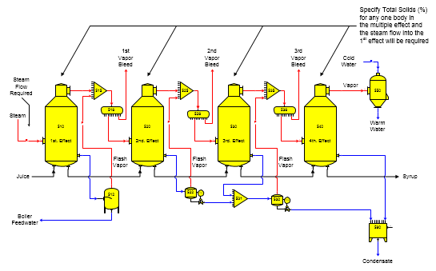
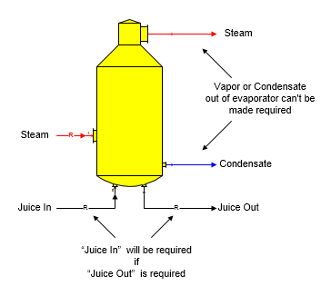

Specifying a Total Solids (%) for any one body in a multiple-effect will cause the steam flow into the 1st effect of the multiple to become a required flow. If the input steam quantity isn't known, one body in the multiple-effect must have the "Total Solids (%)" specified for the output flow from that body. Sugars will calculate the quantity of steam used by the multiple-effect to give an output syrup flow having the Total Solids (%) for the effect specified. If a Total Solids (%) is not specified for any effect in the multiple, then the quantity of steam to the multiple must be specified for Sugars to calculate the Total Solids (%) in the syrup leaving the multiple.

It is possible to have a multiple-effect that uses "1 - First Effect" for each of the effects. To use this approach, the quantity of steam into the 1st body, or the "Total Solids (%)" of the output flow from the 1st body of the multiple-effect station must be given to Sugars. Each additional body in the multiple-effect may have a value entered for the "Total Solids (%)" in the output flow from the body; or instead, the quantity of vapor from a previous effect will be used to find the evaporation that occurs in the station. Distributor stations must be used for the vapor flow between each effect if the "Total Solids (%)" is being specified for each body when all effects in the multiple-effect station are given "1 - First Effect"; otherwise, the vapor flow leaving one body may not equal the required steam flow into the next body and a balance will not be achieved by Sugars. If the quantity of steam from a previous effect is not sufficient to satisfy the needs of a subsequent effect for the Total Solids (%) specified, Sugars will give an error message and the Total Solids (%) values for the effects should be revised.
It is necessary that the driving, or motive, steam for a multiple-effect, flow into the first effect; however, the juice (material) flow does not have to flow into the first body initially and more than one juice flow can go to the multiple. Also, having additional steam flowing into an effect is possible other than the first effect, if the quantity of the additional steam is known. Sugars will only adjust the steam flowing into the first effect when it is doing the balance calculations to arrive at a specified "Total Solids (%)" for one body in the multiple-effect station.
The material, or juice, flow out of an evaporator station can be made a required flow if, for example, a quantity of juice is required by another station, or for another specified purpose; however, neither the vapor, nor condensate, leaving an evaporator station can be made required. Sugars will give an error message if a model is built that causes either the vapor, or condensate, to become required. A balance for the model may not be possible if either one of these flows is required because the model is over specified with more conditions to satisfy than are possible. The model is over specified because the performance parameters for the evaporator control the quantity of vapor and condensate that leave the evaporator. If another station requires a certain quantity of vapor, or condensate, from the evaporator, the performance parameters for the evaporator will be in conflict with the station that is requiring a quantity of vapor, or condensate, from the evaporator.

If the syrup out flow leaving a multiple-effect evaporator is made required by another station, the juice flow into the first effect would become a required flow. This feature is useful for cases when a quantity of syrup is needed to satisfy another station in a model and the quantity of juice into the multiple has to be calculated to produce the needed syrup. By making the syrup, or juice, flow out of the multiple-effect evaporator required, Sugars will automatically calculate the quantity of juice into the multiple-effect that is necessary to satisfy the syrup needs of the other station.
Normally, when modeling multiple-effect evaporator stations in a factory, the model of the multiple-effect is built and data is entered into Sugars for all measurable parameters. For example, the heating surface area is usually known, a heat loss for each effect can be estimated, or calculated, a color rise across each effect can be measured, or estimated, the sugar loss due to entrainment can be measured from the condensates, and the vapor temperature out of each effect can be measured, or calculated from the vapor pressures for each effect (or instead, the juice temperature out of each effect can be measured). This data is then entered into the Evaporator Properties window for each effect and a balance is done by Sugars for the multiple. After the balance is completed and verified to represent the multiple-effect being analyzed, the heat transfer coefficients are calculated by entering "Calculate" which will give the Heat Transfer Coefficient Window. The Heat Transfer Coefficient & Heating Surface Calculation window is used to calculate the heat transfer coefficient for the effect using the heating surface.
Calculation of the heat transfer coefficient is based on the results from the balance calculations done by Sugars using the temperature data. Details of the calculations are shown on the window.
Different heat transfer coefficient values can be entered. The heating surface calculated by entering a new value for the Heat Transfer Coefficient and clicking the left mouse button on the Calculate Surface button below the Heating Surface window.
After a new value is calculated for the Heat Transfer Coefficient, or for the Heating Surface using an entered value for the Heat Transfer Coefficient, click the left mouse button on the OK button and Sugars will replace the temperature entry on the Evaporator Properties window with the new heat transfer coefficient (and heating surface, if it was changed).
Evaporator bodies that use a heat transfer coefficient and heating surface instead of temperatures will have different pressure and temperature results for the vapor and juice flows out of the effect when the balance calculations are done if the demands on the body change. That is, the temperature and pressure values will float based on the juice and vapor flow quantities and temperatures into the effect. For a complete multiple-effect evaporator station, the bleed vapor temperatures will fluctuate as the load to the multiple-effect changes from variations in the vapor usage, or the quantity of juice flow into the multiple from changes in beet slice, or cane grind, rate.
Sugars calculates the complete heat balance for each effect during the overall balance calculations; i.e., the heat (enthalpy) in the steam and liquid flows into each effect will equal the enthalpy in the liquid, vapor and condensate flows out less any heat loss that occurs in the effect. The boiling point elevation is calculated for the difference in temperatures between the liquid and vapor flows out. The boiling point elevation depends on the %DS, purity and vapor pressure of the liquid flow steam in the effect. Any entrainment loss in the vapor flow out is considered in the calculations, and the iterations are continued until all specified values are satisfied and the energy and mass balance is achieved. Juice flow into the evaporator will flash if the juice temperature is greater than the temperature of the juice flow out.
When the vapor, or liquid, flow out temperature is specified for an effect, the heat flow into the liquid from the steam flowing into the effect is calculated and then an iteration is done until the heat into the liquid equals the heat leaving with the vapor and liquid output flows while maintaining the boiling point elevation between the liquid and vapor output flows. When the heat transfer coefficient and heating surface parameters are specified, the heat transferred to the liquid flow is calculated by first assuming the temperature of the liquid flow out of the effect. The enthalpy of the vapor and liquid flows leaving the effect is balanced with the enthalpy of the liquid flow in and the heat transferred into the liquid from the vapor flow in. Iterations are continued until the heat transferred equals the heat leaving the body in the vapor and liquid flow streams while maintaining the boiling point elevation between the liquid and vapor output flows. If the vapor flow into the effect contains more heat than can be used, 100% condensation will not occur and the condensate leaving the body will still contain vapor.
See the Examples section for further illustrations of multiple-effect models.